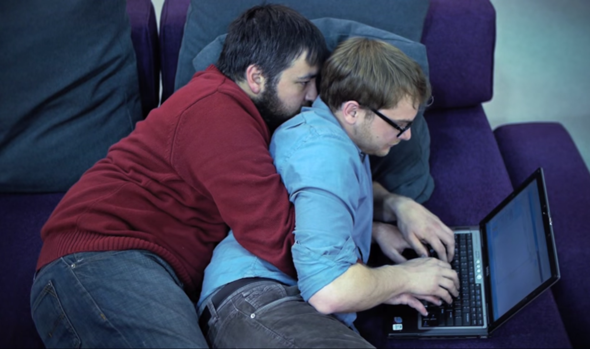

["You", "Me"].join(" & ")
On Pairing and Feedback
March 9, 2015
One of the requirements for DBC's Phase 0 is Pair Programming. We have to make sure that we pair with another student from our cohort (can be from any location) at least twice a week, for at least 45 minutes per session.
At first, I was dreading the whole pairing thing. I'm the kind of person that works best alone, not because I'm not a people person, but because I usually like to keep things at my own pace. I also tend to kind of think things through in my head and on paper, so verbally expressing my ideas would be a little challenging.
Pairing has proved to be the opposite. I mean there are days when I feel like I don't want to pair, but when it comes down to it i ALWAYS enjoy it. There has not been a single pair challenge, to date, that was not beneficial. I learn something new every time. It can be something as simple as syntax shortcuts, or even a different methods that give the same output.
I feel that when I pair, and am required to verbally express what I want to do, or what I expect will happen, it cements things I've learned or read about. So as of right now, I enjoy pairing. The only thing I don't always agree with are the mandatory pair challenges. I kind of enjoy choosing the challenges to pair on. Sometimes I feel like some challenges are more appropriate to pair on than others.
Feedback is another weekly requirement. For each pairing session, we are to leave feedback on our experience. So far I mostly agree with the feedback that I've received.
I am very open to constructive criticism. Most of my feedback has one common trait, and it's something I was aware of from the start: verbally communicating my thoughts.
As the weeks go, I try to pair more than the minimum requirement, so that I can work on my communication skills. I've started to tell my pairing partners, what I am going to do (ahead of time) and making sure that they're clear on why, before proceeding.
Pairing and leaving feedback has also helped me outside of DBC. I am applying similar principles in my personal life. Overall, I look forward to continuing with these two concepts through Phase 0, and beyond.
Pocket Gophers, feel free to message me on Slack(@gechrod) or Google+. Thanks for reading! Come again next week!
- Geovanna
-
Click here for more posts, or select a title below:
- Git It? Got It? Good?
- What's Cooking at DBC?
- Are You In or Out?
- Don't Mind Me!
- The Index is Key